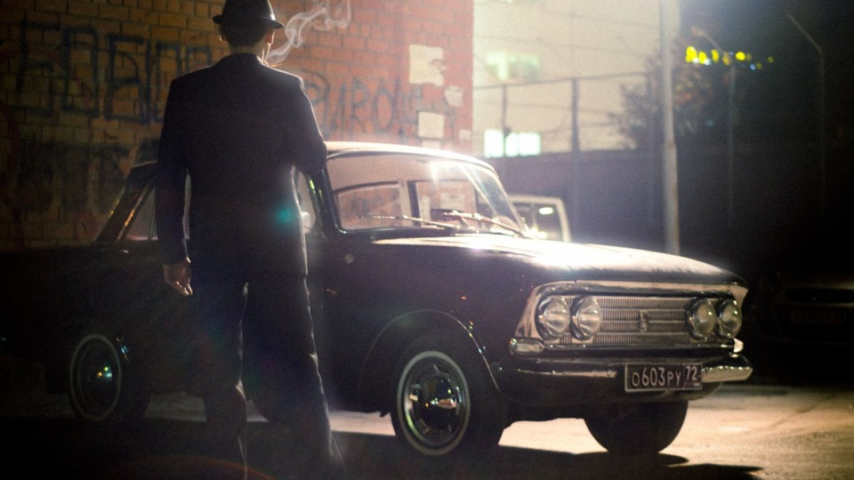

ВАТ «Москвич» — московський автомобільний завод. Розташований на території Південно-східного адміністративного округу Москви. Історичні назви заводу: Московський автоскладальний завод імені КІМ (з 1930 по 1939 рік); Московський автомобільний завод імені КІМ (з 1939 року до Другої світової війни); Московський завод малолітражних автомобілів - ЗМА або МЗМА (з 1945 по 1968 рік); Автомобільний завод імені Ленінського Комсомолу - АЗЛК (з 1968 до 1992 рік); ВАТ «Москвич» (після 1992 року).
Історія заводу АЗЛК
У цьому проекті буде розказано про декілька періодів з історії заводу АЗЛК, від початку його існування під ім’ям "Московський автоскладальний завод імені КІМ" до його банкрутства вже як ВАТ "Москвич".